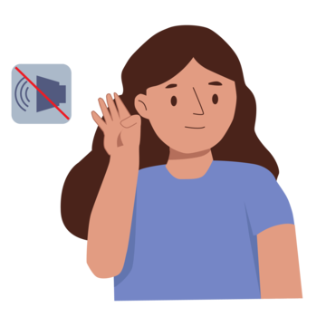

PERSONA SORDA
Desde la visión socio antropológica la persona sorda no es vista como alguien con discapacidad, si no como un sujeto cultural y lingüístico el cual hace parte de una comunidad que cuenta con una identidad propia. Esta visión plantea una percepción diferente a la que tiene el enfoque medico tradicional, ya que argumenta que la sordera no es una limitación sino una diferencia lingüística. En este contexto entra la lengua de señas como una modalidad comunicativa visualgestual que permite a las personas comunicarse e interactuar con los demás.
